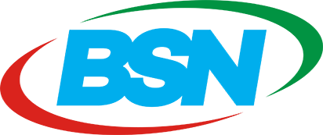

Kategori produk
Dari {{ totalPangan + totalNonPangan }} entri sesuai filter
{{ totalPangan }}
Produk pangan
{{ totalNonPangan }}
Non-pangan

Integrasi master data LTSPK BSN di daerah
UKM binaan unik
{{ scopeLabel }}
Dari {{ totalPangan + totalNonPangan }} entri sesuai filter
Jumlah entri per jenis pembinaan
Berdasarkan jumlah entri data
Belum ada data wilayah untuk ditampilkan.
UKM yang mulai dibina (menurut tahun mulai) dibandingkan jumlah tersertifikasi (menurut tahun tanggal SPPT SNI)
Belum ada data tahun untuk ditampilkan.
Tanda "-" pada status berarti belum tersertifikasi atau sertifikat belum terbit
Jumlah entri menurut tahun mulai dibina
Belum ada data tahun untuk ditampilkan.
{{ filteredData.length }} data ditemukan
| No | UKM | Wilayah | Kontak PIC | Produk | Judul SNI | Tahun binaan | Jenis | Progres | Detail progres | Tanggal SPPT SNI | Status sertifikat |
|---|---|---|---|---|---|---|---|---|---|---|---|
| {{ (currentPage - 1) * pageSize + index + 1 }} |
{{ item.namau_ukm || item.nama_umk }}
{{ item.alamat_lengkap || '-' }}
{{ item.nama_unit }}
|
{{ item.kota }}
{{ item.provinsi }}
|
{{ item.kontak_pic || '-' }} |
{{ item.produk }}
{{ item.kategori_produk }}
|
{{ item.judul_sni || item.sni_yang_diterapkan || '-' }} |
Mulai: {{ item.tahun_mulai_dibina || '-' }}
Aktif: {{ item.tahun_aktif_dibina || item.tahun_berjalan || item.tahun_riwayat || '-' }}
|
{{ item.jenis_pembinaan || item.jenis || '-' }} | {{ item.progres_pembinaan || item.progres }} |
{{ item.detail_progres }}
-
|
{{ formatDate(item.tanggal_sppt || item.tgl_sppt) }}
s/d {{ formatDate(item.tanggal_berakhir_sppt || item.tgl_berakhir) }}
|
{{ item.status_sertifikat }} {{ item.status_sertifikat }} {{ (item.status_sertifikat && item.status_sertifikat.trim() !== '-') ? item.status_sertifikat : 'Belum tersertifikasi' }} |
| Tidak ada data yang sesuai filter. Ubah atau atur ulang filter untuk melihat data. | |||||||||||